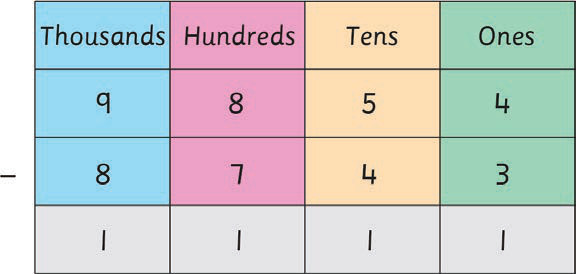

Subtracting whole numbers vertically
Example 1
9854
- 8743
─────
Solution
Align the numbers according to the place value of each digit.
This can be done as shown in the table.

Therefore, the answer is 1111.
Example 2
Steps
1. Subtract the ones: 7 – 6 =1. Write 1 in the ones place.
2. Subtract the tens: 9 – 2 = 7. Write 7 in the tens place.